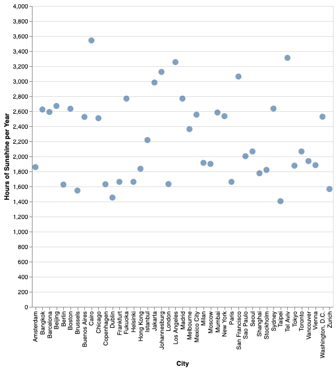

INFO 4602 Final Spring 2022
Sammy Pann and Sydney Kingsepp

The Problem
The lifestyle of a college student can be extremely exhausting. Between academic pressure, social pressure, future career planning pressure, etc., university students oftentimes find themselves down in the dumps. For our project, we wanted to find out how to boost our moods as college students! .
The Data
While looking at various different types of data, we came across this
dataset. After examining this dataset, we then analyzed the metrics in the happiest cities across the globe.
These are the metrics we decided to look at:
- Hours of Sunshine
- Outdoor Activities
- Pollution Index
- Number of Takeout Places
Hours of Sunshine x City

Sunshine Conclusion
While looking at the hours of sunshine in each of the happiest cities, we can see that most of these cities experience a higher amount of sunshine per year. Therefore, it can be assumed that spending more time in the sunshine could increase your happiness level.
Number of Outdoor Activities x City
Outdoor Activity Conclusion
All of these cities have above 10 outdoor activity oppurtunities. Staying active and being outside (and in the sun) will exponetially heighten one's mood.
Pollution Conclusion
The happiest cities in the world all have a pollution index under 100. While pollution is unfortunately a force to be reckoned with, each individual can do their part to help reduce the amount of given pollution in their city.
Number of Takeout Restaurants x City
Takeout Conclusion
We can visually see that each of these cities are on the lower end on the amount of takeout places they have to offer. This goes to show, ordering takeout instead of cooking in, could affect one's happiness.
From our analysis, we were able to come up with these tips on how to boost your mood:
- Spend time in the sunshine! It's good for you! Here are some activies to do in the sunshine.
- Go outside and be active! Don't know what activity to do outside? Click here.
- Do your part to reduce pollution! Resources to do so can be found here.
- Limit the amount of times you order takeout. Make dinner with a friend using one of these recipes!
Now, let's go play outside!!!

Disclaimer: We understand we are not professionals offering this advice, these are just merely conclusions based on the dataset. We understand each individual is different and these solutions may not work for everyone. It is all subjective and suggestive.